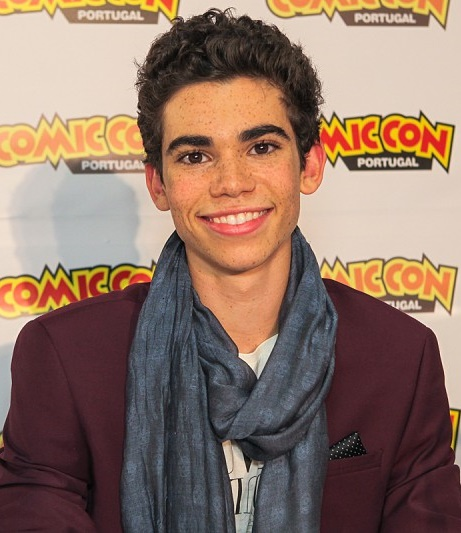

Biografia
Cameron Mica Boyce nasceu em 28/05/1990. Viveu em Los Angeles na Califórnia com seus pais Libby Boyce e Victor Boyce, e sua irmã mais nova Maya Boyce.
Ator, cantor, dançarino e dublador estadunidense.
Seu estilo favorito de dança era o break,
e tinha um grupo de dança chamado X Mob, onde também era conhecido como Truth,
por isso seu fandom é chamado de "truthanators".
Começou sua carreira em 2008 num clipe da banda Panic! At The Disco, interpretando uma versão mais jovem do guitarrista Ryan Ross. No mesmo ano, ele fez sua estreia na televisão americana num papel recorrente da série General Hospital.
voltar ao sumário